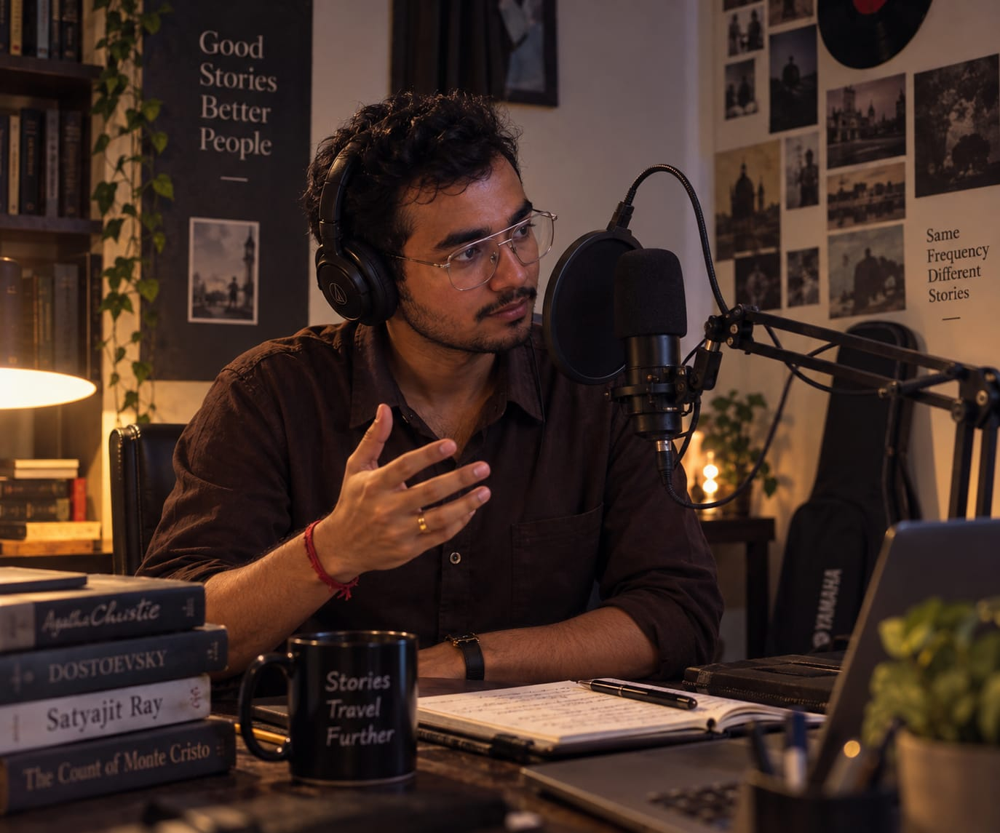

01 · 2025
Manomatha's Letter
Audio adaptation · Narration, direction & character performance
AVAILABLE · PLAY NOW
Voice acting, narration and audio adaptations — a growing creative space where literature becomes something you can hear.
I enjoy the strange little transformation that happens between reading a story and performing it. The words stay the same, but pace, breath, silence and character change the experience.

SOME STORIES NEVER REALLY END.Audio adaptation · Narration, direction & character performance
Narration and recitation
Literary adaptations, Bengali storytelling and character-driven audio experiments.
I like stories that can live through a voice — where narration, rhythm, silence and character become part of the experience.